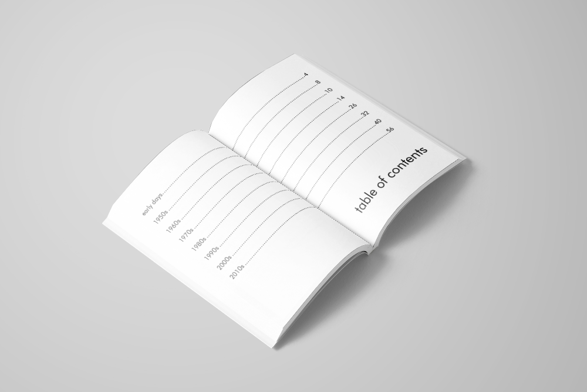
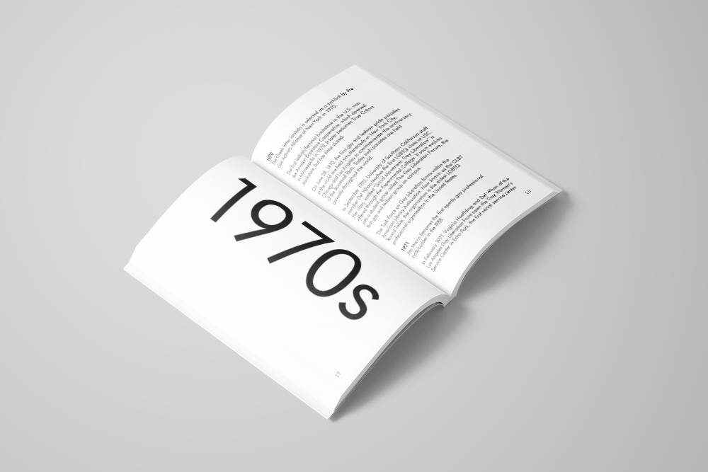
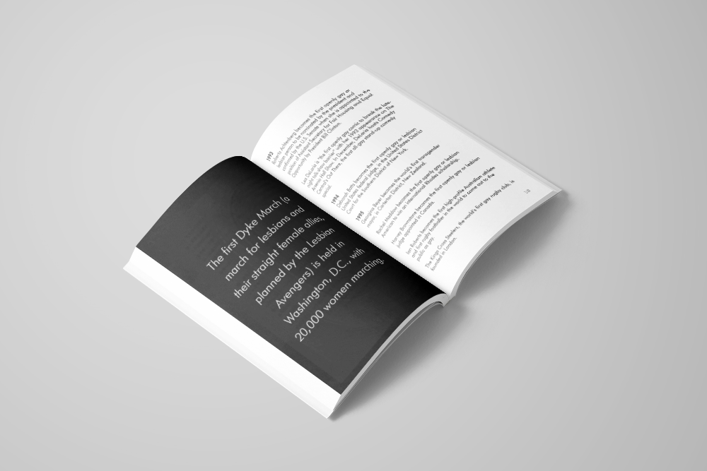
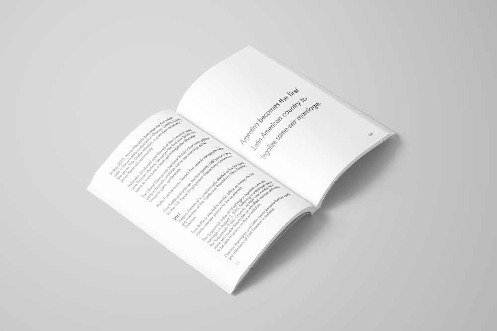

This book was created in the fall of 2017 for an assignment that asked us to design a book based on the contents of a long Wikipedia article. The article I used was "List of lesbian, gay, bisexual, or transgender firsts by year".
I was inspired to use Futura because of its association with the 20th century, when the gay rights movement gained the most traction, and the use of geometric sans serifs in protest posters, such as the famous "Silence = Death".
I organised the content in chapters based on decade. The chapters ranged from only a few pages at the beginning to over 30 near the end, reflecting the progress being made for LGBT rights in recent decades.
 